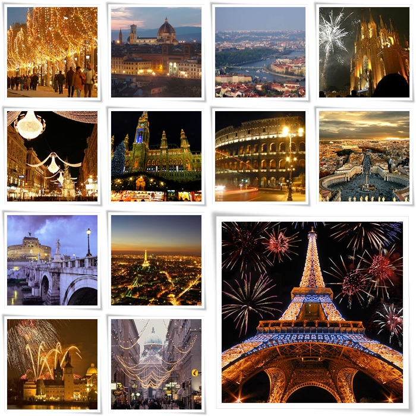

ETUR este un site unde poți să găsești poze și informații despre diverse atracții turistice din Europa. Fie că vorbim despre monumente vechi de secole, parcuri neobișnuite sau muzee faimoase, bătrânul continent poate satisface chiar și cel mai pretențioși vizitator. Când vine vorba despre cultură și locuri minunate de vizitat, Europa este destinația perfectă pentru turiștii de pretutindeni. Dacă ai în plan să faci o călatorie prin Europa o să ai parte de sute de obiective excepționale pe care nu o să le uiți prea curând.
ETUR prezintă o listă cu cele mai vizitate atracții turistice din Europa pe care ar trebuii să le vezi și tu măcar odată în viață.
